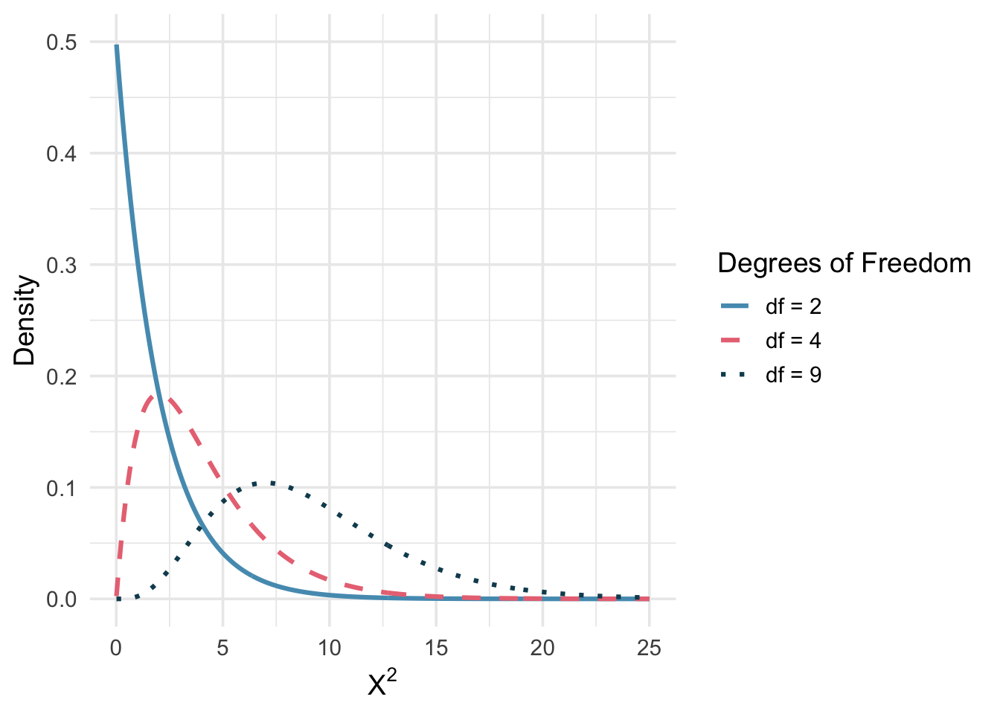

4.1 Chi-Squared Goodness of Fit
In previous chapters, we have developed inferential methods for comparing proportions across two groups. But what if we want to assess whether a single categorical variable with multiple levels follows a particular distribution? For instance, we might want to know if a jury pool is racially representative of the community, or whether the days of the week on which accidents occur are equally likely. The chi-square goodness of fit test is designed for exactly this purpose. It compares a set of observed counts to a set of expected counts derived from a hypothesized distribution, using a single test statistic that summarizes all of the differences at once.
Key Concepts
- Test a hypothesis about a categorical variable using a chi-square goodness-of-fit test
- Recognize when a chi-square distribution is appropriate for testing a categorical variable
Testing more than two groups
Up until now, we have discussed testing for categorical variables when there are only two groups. However, there are many statistical questions that require us to test categorical variables with three or more groups. In this chapter, we will learn about two new tests that give us additional methods to learn about categorical variables.
The \(\chi^2\) goodness-of-fit test is used to test proportions when we have more than two groups in a single categorical variable.
In this chapter, we will be discussing a new hypothesis test called the \(\chi^2\)(chi-square) goodness-of-fit test. The \(\chi^2\) goodness-of-fit test is used to test the relative frequency (or proportion) of observations for three or more groups.
Setting up the hypotheses
Class Example 4.1.1: Motivating dice example
Suppose you are interested in determining if a die is fair, so you roll it 54 times and get 8 ones, 7 twos, 13 threes, 11 fours, 9 fives, and 6 sixes. What null and alternative hypothesis would you wante to use to determine if the die is fair?
General Form of the Hypotheses
\[ \begin{aligned} H_0{:} & \hspace{.5em} p_1 = p_{10}, p_2 = p_{20}, \dots, p_k = p_{k0} \\ H_A{:} & \hspace{.5em} \text{At least one } p_i \text{ is different} \end{aligned} \]
There are \(k\) groups here an one restriction is that the null proportions must sum to 1 (\(p_{10} + p_{20} + \cdots + p_{k0} = 1\)). Note that the alternative only states that at least one proportion differs from the stated value. If we reject the null hypothesis, we do not know which one is different. We only know that at least one of them is.
Observed versus expected counts
The expected count for each category is found by multiplying the sample size by the hypothesized proportion for that category.
As with all hypothesis tests, we assume that the null hypothesis is true when we conduct our test: we would expect the sample proportions to roughly match the population proportions. For the \(\chi^2\) goodness-of-fit test, we use this assumption to figure out the counts we expect to see in the sample.
Class Example 4.1.2: Motivating dice example continued
If the null is true, and the die is fair, what would you expect for the number of ones, twos, threes, ect.?
If the null hypothesis specifies proportions \(p_{10}, p_{20}, \ldots, p_{k0}\) for \(k\) categories, and the total sample size is \(n\), then the expected count for category \(i\) is:
\[E_i = n \times p_{i0}\]
The \(\chi^2\) statistic
To build a test statistic, we first compute the standardized difference between each observed and expected count. For each category \(i\):
\[Z_i = \frac{O_i - E_i}{\sqrt{E_i}}\]
where \(O_i\) is the observed count and \(E_i\) is the expected count. The denominator \(\sqrt{E_i}\) serves as the standard error for the count.
We would like to use a single test statistic to determine if these four standardized differences are unusually far from zero as a group. We do this by squaring each standardized difference and adding them up:
\[X^2 = Z_1^2 + Z_2^2 + Z_3^2 + \cdots + Z_k^2\]
Squaring each standardized difference before adding them together does two things:
- Any standardized difference that is squared will be positive, so negative and positive deviations both contribute to the test statistic.
- Differences that are already unusual (e.g., a standardized difference of 2.5) become much larger after squaring, which gives them more weight.
The chi-square test statistic is the sum of the squared standardized differences between observed and expected counts:
\[X^2 = \sum_{i=1}^{k} \frac{(O_i - E_i)^2}{E_i}\]
where the sum is over all \(k\) categories, \(O_i\) is the observed count in category \(i\), and \(E_i\) is the expected count in category \(i\) under the null hypothesis.
Notice that a larger test statistic indicates observed data that differs from what \(H_0\) suggests. This should lead us to want to reject \(H_0\). Because we always wish to reject the null for larger test statistics, we always think of this as a right-tailed test. Therefore, our \(p\)-value will be the area in the right-tail beyond our test statistic.
The \(\chi^2\) distribution
The chi-square test statistic \(X^2\) follows a \(\chi^2\) distribution when the null hypothesis is true and all the expected counts are at least 5 or larger. The \(\chi^2\) distribution is characterized by a single parameter called the degrees of freedom (df), computed by \(k - 1\), which influences the shape, center, and spread of the distribution.
Key properties of the chi-square distribution:
- It is always non-negative (the chi-square statistic is a sum of squared values).
- It is right-skewed, especially for small degrees of freedom.
- As the degrees of freedom increase, the distribution becomes more symmetric and shifts to the right.
- The mean of the distribution equals the degrees of freedom.
Class Example 4.1.3: Motivating dice example continued
What are the test statistic and \(p\)-value for determineing if the die is fair? (Check conditions!) What is our conclusion?
Chi-square goodness of fit test
We can now summarize the complete procedure for a chi-square goodness of fit test.
Chi-square test for goodness of fit.
Suppose we want to evaluate whether the observed counts \(O_1, O_2, \ldots, O_k\) in \(k\) categories are consistent with a hypothesized distribution that specifies expected counts \(E_1, E_2, \ldots, E_k\).
Hypotheses:
\[ \begin{aligned} H_0{:} & \hspace{.5em} p_1 = p_{10}, p_2 = p_{20}, \dots, p_k = p_{k0} \\ H_A{:} & \hspace{.5em} \text{At least one } p_i \text{ is different} \end{aligned} \]
Test statistic:
\[X^2 = \sum_{i=1}^{k} \frac{(O_i - E_i)^2}{E_i}\]
When the null hypothesis is true and the conditions are met, \(X^2\) follows a \(\chi^2\) distribution with \(df = k - 1\).
The p-value is found from the upper tail of the chi-square distribution.
Conditions:
- Independence. Each case that contributes a count must be independent of all other cases.
- Sample size. Each expected count must be at least 5.
Class Example 4.1.4: Distribution of fish
The Game and Fish Department stocked a lake with fish in the following proportions: 30% catfish, 15% bass, 40% bluegill, and 15% pike. Five years later it sampled the lake to see if the distribution of the fish had changed. It found that the 500 fish in the sample were distributed as follows: 117 catfish, 88 bass, 223 bluegill, and 72 pike. Determine if the proportions of the types of fish in the lake have changed in the past 5 years by using a 5% significance level.
Class Example 4.1.5: Age discrimination on U.S. juries
It is often said that older people are overrepresented on juries in the United States. The UCLA Law Review randomly selected cases in one county in California, and recorded the number of jurors in various age groups given in the table below. Do the following data suggest that the UCLA Law Review should expand the scope of their study to more counties (they would do this if they observed discrimination)? Use \(\alpha=0.05\).
| 21-40 | 41-50 | 51-60 | 61+ | Total | |
|---|---|---|---|---|---|
| Countywide Proportion (%) | 42.0 | 23.0 | 16.0 | 19.0 | 100.0 |
| Grand Jurors (counts) | 10 | 18 | 38 | 66 | 132 |
| Expected (counts) |
Summary
In this chapter, we developed the chi-square goodness of fit test, which assesses whether a sample of categorical data is consistent with a hypothesized distribution. The test uses the chi-square statistic, which measures how far the observed counts deviate from the expected counts. When the null hypothesis is true and the conditions are met, this statistic follows a chi-square distribution with \(k - 1\) degrees of freedom, where \(k\) is the number of categories. The p-value is always computed from the upper tail of the chi-square distribution, since larger values indicate greater discrepancy between the observed and expected counts.